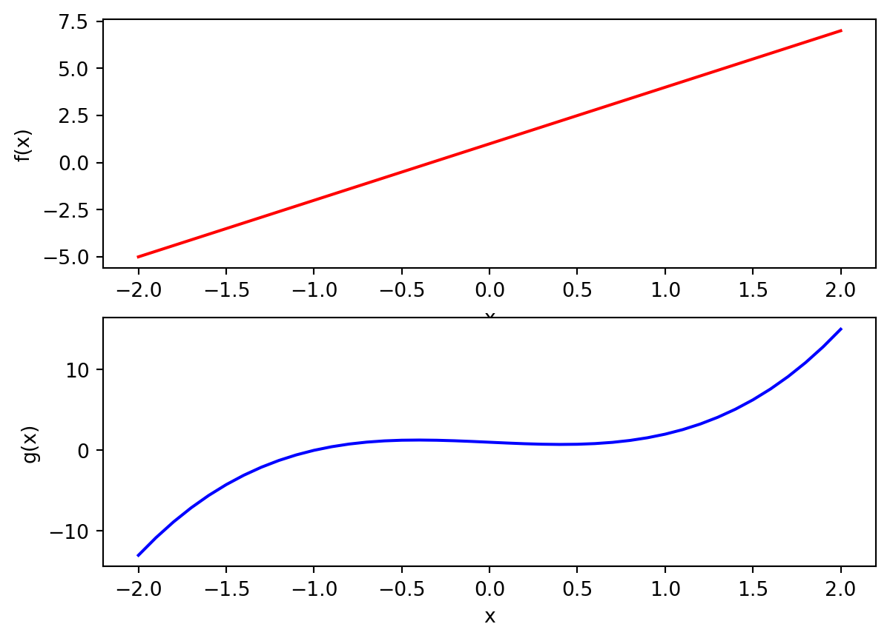
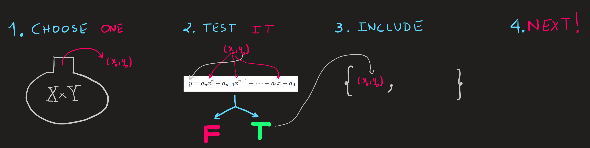
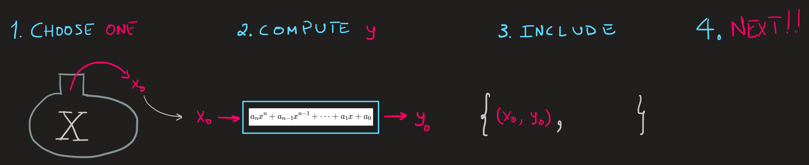
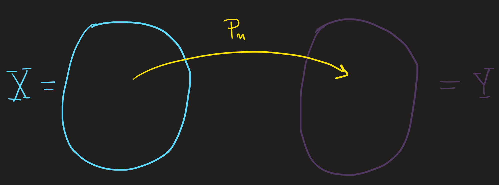
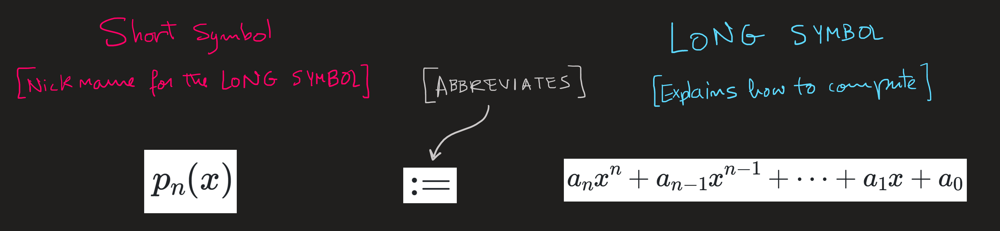
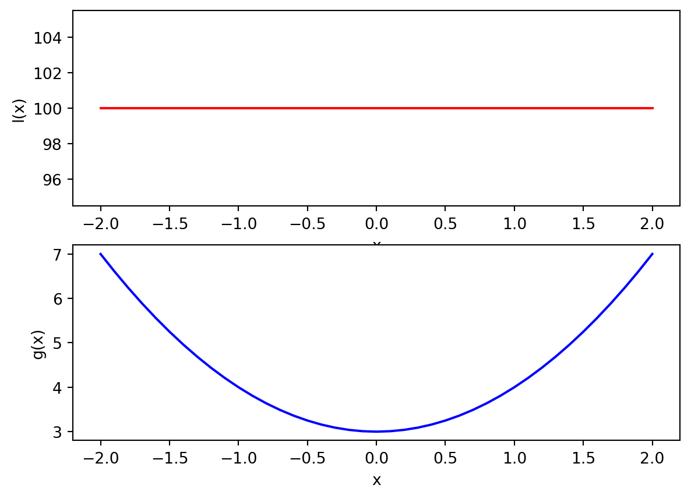

Getting the feet wet with polynomials
Introduction
Polynomials are the simplest functions we can study and are an ideal arena to put into practice the two key views on functions:
Relation Point of View
Procedure Point of View
Relation definition of polynomial functions
Under the relation perspective, we specify a function by listing all ordered pairs that make up its graph. Here are four examples of polynomial functions:
\[ \begin{align}&\{(x,y)\in \mathbb{R}^2\,\,|\,\, y=100\}\\&\{(x,y)\in \mathbb{R}^2\,\,|\,\, y=3x+1\}\\&\{(x,y)\in \mathbb{R}^2\,\,|\,\, y=x^2+3\}\\&\{(x,y)\in \mathbb{R}^2\,\,|\,\, y=2x^3-x^2+0x+1\}\end{align} \tag{1}\]
How should we interpret this notation?
These are sets because they appear between \(\{\) and \(\}\).
Stating that \((x,y)\in \mathbb{R}^2\), just says two things at once:
- the elements of the set are ordered pairs \((x,y)\)
- that \(x\in\mathbb{R}\) and \(y\in \mathbb{R}\), in other words, \(x\) and \(y\) are reals.
the bar \(|\) we see in Equation 1, reads as “such that”, after which we write some rule/property/equation that we wish these ordered pairs of reals to have. For example the equation \(y=100\) is the rule we want for the first polynomial in Equation 1, therefore this function is composed by all ordered pairs \((x,y)\) with \(y\) equal to \(100\), while \(x\) ranges on all reals.
To interpret the notation as a whole, take \(\{(x,y)\in \mathbb{R}^2\,\,|\,\, y=3x+1\}\). We read is as a “set that contains ordered reals, such that they obey the equation \(y=3x+1\)”. As an example, the pair \((1.3,2.9)\) obeys the equation because \(2.9 = 3\times 1.3 +1\) is true, therefore it belong to the set, but \((1,3)\) does not since \(3=3\times 1 +1\) is false.
The equations we wrote after \(|\) allow us to compute from a given \(x\) a unique value \(y\). As an example of this fact, choose the equation of the second polynomial, \(y=3x+1\), plug in \(x=0\), what do we get? We get \(y=3\cdot 0 +1\), that is, just the number \(y=1\). Notice we do not get other possible value for \(y\), we just get the \(y=1\), no other possibility; in fact the same happens for any other \(x\) we choose. This is such an obvious fact we actually skip by it. But it is important, because the fact that the equations in Equation 1 have that property ensures us that each possible value of \(x\) does not appear two or more times within these set. In such situation we have in our hands more than a set, we have a function!
Commentary
The set \(\{(1,2),(1,3),(2,4)\}\) have \(1\) connected to \(2\) and \(3\), thus it is not a function. The set\(\{(x,y)\in \mathbb{R}^2\,\,|\,\, x\in \mathbb{R} \land y\in[2,3]\}\) have each real \(x\) connected to every real between \(2\) and \(3\), its also not a function. The set \(\{(x,y)\in \mathbb{R}^2\,\,|\,\, y^2=x^2\}\) is not a function, if I specify \(x=1\) then we get \(y^2=1\) whose solution is either \(y=\pm 1\). Therefore we have two y-numbers \(\pm1\) attached to \(x=1\).
These sets are not functions, but still, they make connections between the values of \(x\) and \(y\) . Because they relate the values \(x\) and \(y\), we call these sets relations. Note that functions are also relations.
Observation of the right hand side of the rules in Equation 1 show they are all some combination of a power of \(x\) times some number (positive or negative), the jargon for this is to say we have a linear combination of powers of \(x\). From Equation 1 we conclude the general form of these rules (equations) is:
\[ y=a_nx^n+a_{n-1}x^{n-1}+\dots+a_1 x+a_0 \tag{2}\]
where the coefficients are labeled by \(a_0\) through \(a_n\) are reals.
Recall
A Cartesian product of the sets \(X=\{1,2,3\}\) and \(Y=\{4,5\}\) is defined as:
\[ X\times Y =\{(1,4),(1,5),(2,4),(2,5),(3,4),(3,5)\} \]
The truth set of the statement Equation 2 is the function:
\[ P_n := \{(x,y)\in X\times Y\,\,|\,\, y=a_nx^n+a_{n-1}x^{n-1}+\dots+a_1 x+a_0\} \]
Which reads: from the pairs in the Cartesian product of the set \(X\) with the set \(Y\) we choose only the elements such that the rule \(y=a_nx^n+a_{n-1}x^{n-1}+\dots+a_1 x+a_0\) is obeyed; it is useful to think about it as if we were choosing one by one the elements of \(X\times Y\) which are of the form \((x,y)\) and then verifying whether that rules applies or not (True or False), see Figure 1 .

The highest power of \(x\) is \(n\) and is called the degree of the polynomial. We can and will use it to classify the polynomial functions, that is the reason why we decided to label the set by the symbol \(P_n\).
Procedure definition of polynomials functions
Rather then the view of Figure 1 on how to build the function \(P_n\) we adopt a slightly different strategy:

Rather than to choose, test and verify each element of the Cartesian product we can instead choose from \(X\) the elements one by one and compute the corresponding \(y\) by the calculation \(a_nx^n+a_{n-1}x^{n-1}+\dots+a_1 x+a_0\); then we just include the so obtained ordered pair in the set \(P_n\). The perceptive in Figure 2 is expressed in mathematical notation as:
\[ \begin{align} p_n:X&\longrightarrow Y\\x &\longmapsto p_n(x):= a_nx^n+a_{n-1}x^{n-1}+\dots+a_1 x+a_0 \end{align} \tag{3}\]
Lets unpack what does this mean:
On the first row we find symbols that stand for:
The procedure labeled by the symbol \(p_n\) maps elements of \(X\) into elements in \(Y\)
This row of information immediately tells us what sets are involved, we can picture it as

\(X\) is called the domain of the function, while \(Y\) is the codomain.
The second row explains many aspects of the procedure between these sets: the symbol \(x\) stands for a generic element of the set \(X\) while the symbol \(p_n(x)\) represents the element in \(Y\), which is assigned to \(x\) (notice the \(\mapsto\) arrow), when the procedure \(p_n\) acts on it. This row also tell us what is the element \(p_n(x)\), by telling what \(p_n\) does with the number \(x\)! The string of symbols:
\[ p_n(x):= a_nx^n+a_{n-1}x^{n-1}+\dots+a_1 x+a_0 \]
must now be well understood:
i) \(a_nx^n+a_{n-1}x^{n-1}+\dots+a_1 x+a_0\) is the LONG symbol for the element of \(Y\) which is assigned (connected) to \(x\);
ii) it is LONG because it explains how the number comes about. We usually abbreviate the LONG symbol by a short symbol such as \(p_n(x)\). The symbol \(:=\) means “by definition is equal to”.

The entire definition Equation 3 is the definition of a function, out of convince we name the function after the procedure, and refer to the function just as the “\(p_n\) function”. Observe that the symbol \(p_n\) is our choice, we can use any symbol as we wish, traditionally we use just one letter \(f\), \(g\), \(h\), etc.
Comment
The largest domain supported by the procedure \(p_n\) is \(X=\mathbb{R}\) irrespective of the degree \(n\), because with any real \(x\) we can do the calculation \(p_n(x)\); as usual the \(Y\) is the codomain and could either be chosen as \(\mathbb{R}\) or the range of the function. The range of a function depends on the degree \(n\), being \(\mathbb{R}^+_0\) if \(n\) is even and \(\mathbb{R}\) is \(n\) is odd integer.
Examples
Consider the functions:
\[ \begin{align} &F:=\{(x,y)\in\mathbb{R}\times\mathbb{R}\,\,|\,\,y=3x+1\}\\ &G:=\{(x,y)\in\mathbb{R}^+\times\mathbb{R}\,\,|\,\,y=2x^3-x^2+0x+1\} \end{align} \]
The domain of \(F\) is \(X=\mathbb{R}\) while that of \(G\) is \(X=\mathbb{R}^+\), the codomains are both \(Y=\mathbb{R}\).
We can rewrite the functions \(F\) and \(G\) using the procedure notation as
\[ \begin{align} f:\mathbb{R}&\longrightarrow \mathbb{R}\\ x &\longmapsto f(x):= 3x+1 \end{align} \tag{4}\]
\[ \begin{align} g:\mathbb{R}^+&\longrightarrow \mathbb{R}\\ x &\longmapsto g(x):= 2x^3-x^2+1 \end{align} \]
The range is the set of all outputs of a function, conveniently named by the symbols \(f(\mathbb{R})\) and \(g(\mathbb{R})\). What are these sets? Unfortunately, this requires tools not yet introduced in these notes, to circumvent that, we will simply plot the functions and guess what we think the range is:
We can see that the outputs of the \(F\) function increase/decrease without bound as \(x\) increases, thus the range is \(\mathbb{R}\) in both functions. For the function \(G\), as \(x\) increase, the outputs do as well; observe \(x\) is never zero! Thus the range is \(\mathbb{R}^+\).
Commentary
When one wishes to refer to functions defined as Equation 3 we simply say “the function \(p_n(x)\)”. For example if I want to say Equation 4 has property \(A\), then we should say “the function \(f(x)\) has property \(A\)” or more simply “the function \(f\) has property \(A\)” or “the function \(3x+1\) has property \(A\)” or even “the function \(y=3x+1\) has property \(A\)”. Even though the later are not accurate ( \(f(x)\) is a variable symbol, \(f\) labels the procedure and \(y=3x+1\) is an equation) we will still use it. We sacrifice a bit of accuracy for the sake of brevity.
Exercise
Define Equation 3 for the first and third function sets in Equation 1. Be careful in specifying what is the range of either function.
Answer
From the set:
\[ \{(x,y)\in \mathbb{R}\times\mathbb{R}\,\,|\,\, y=100\} \]
we identify the domain and codomain as the first and second sets in \(\mathbb{R}\times\mathbb{R}\), thus the domain is \(\mathbb{R}\) and the codomain is \(\mathbb{R}\) aswell. Meanwhile the range is just is \(l(\mathbb{R})=\{100\}\). We can write this function using the procedure notation as:
\[ \begin{align} l:\mathbb{R}&\longrightarrow \{1\}\subset \mathbb{R}\\ x &\longmapsto l(x):= 100 \end{align} \]
The second function-set:
\[ \{(x,y)\in \mathbb{R}^2\,\,|\,\, y=x^2+3\} \]
Is translated into:
\[ \begin{align} c:\mathbb{R}&\longrightarrow [3,+\infty[\subset \mathbb{R}\\ x &\longmapsto c(x):= x^2+3 \end{align} \]
The domain and range are both \(\mathbb{R}\) again but the range is trickier. We want to compute the set \(c(\mathbb{R})\), to do it, we note by inspecting \(x^2+3\) that its minimum value occurs when \(x=0\) and the larger the \(x\), the larger is \(x^2+3\), thus \(c(\mathbb{R})=[3,+\infty[\), which is a subset of the codomain \(\mathbb{R}\).
